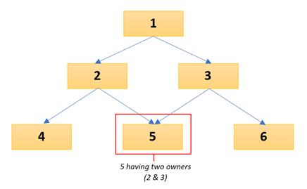

Network Model
Network Model is one of the well-known DBMS Models along with the hierarchical and relational model. It was presented by Charles Bachman in 1969 and was formally defined by the Conference on Data Systems Languages (CODASYL in 1971 as a DBMS model permitting one-to-many or many-to-many data relationships.
Structure of a Network Model

The relationship between the owner and its members is called “set” which is the network model's basic data construct. Each set consists of at least two(2) types of record, an owner record and a member record. Having this member link to another set, perhaps another parent replaced the hierarchical tree with a graphical diagram as more and different nodes become connected forming a complex structure.
Sample of a Set becoming more complex
Major Strengths of Network Model
Limitations in Network Model
The fast and easy access of records caused by the enhanced association of data information of the Network model made it beneficial for mapping many-to-many relationships. The Network Model doesn't go far from the Hierarchical Model but was only the enhanced version of it.